使用小程序
据说，在RoboMaster流传着一本手册，每个队员都能抄写并背诵全文。那就是——规则手册。
规则手册读完后醍醐灌顶、神清气爽。不管看比赛还是玩比赛，撩起袖子说来就来。
我知道你们肯定懒得看，所以我把手册浓缩成1个视频+7段自白，希望也能让你几分钟内感受清风扑面而来。
RoboMaster 2019规则视频
机器人阵容
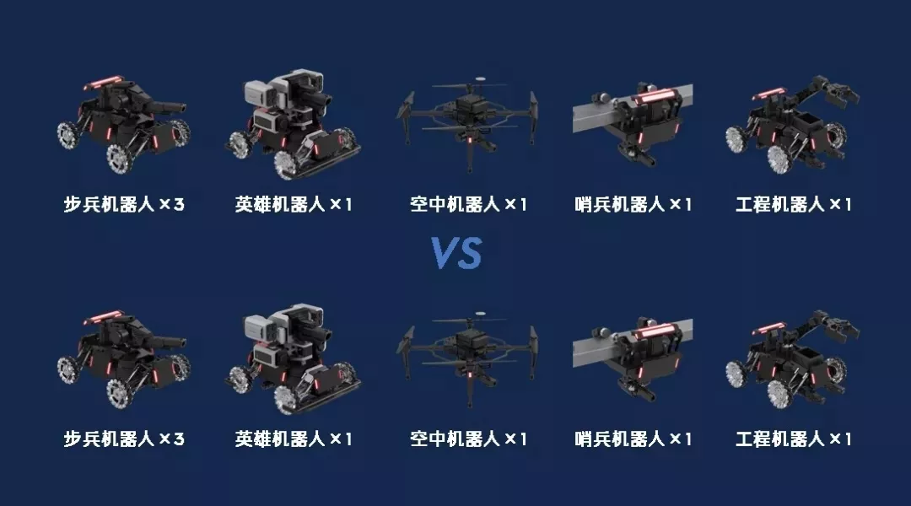
比赛有红蓝双方，分别有7台机器人，操作手操控机器人，发射弹丸攻击敌方。
机器人被攻击就会掉血，血量为零就死啦。7分钟内，先击溃敌方基地的战队获胜。
不过，2019赛季的机器人有什么亮点，他们有话要说——
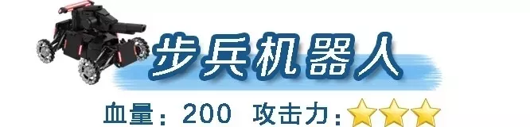
大家好，我是步兵，今年我拥有了更强的火力，不再是被吊打的弱鸡。
不过，我也挺倒霉的。为了给哨兵和无人机表现机会，我被强制安装了一块“来打我呀”装甲片在头顶。
只要有机器人在上空经过，我就感到头冷。
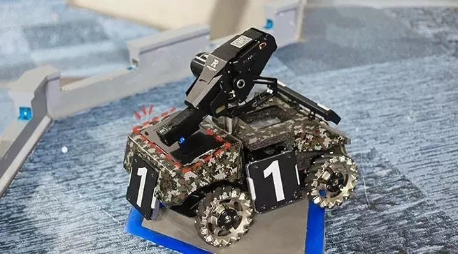
至于能量机关，我还能打，给全队带来好几倍的攻击力加成。
2
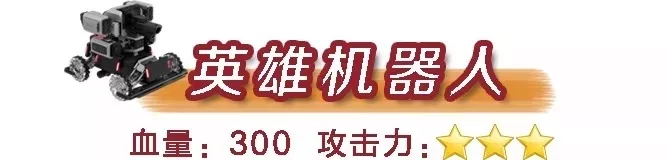
我就有点惨了，今年惨遭“屎诗级”削弱，可能连步兵都打不过。
比如，一级英雄4秒才能发一颗弹。喵喵喵？？？树懒4秒都能说出3个字了，我的射频比树懒还低！我不要面子的吗？！
底盘功率被降到80W，和步兵一毛一样！肥胖的我怕是连一只小步兵都追不上了。
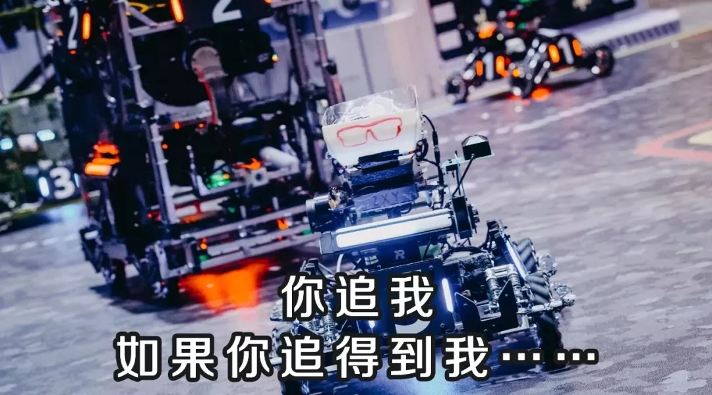
而且，我怀疑我是不是被针对了，连上岛取弹都不让，只能当一只啃老型英雄。
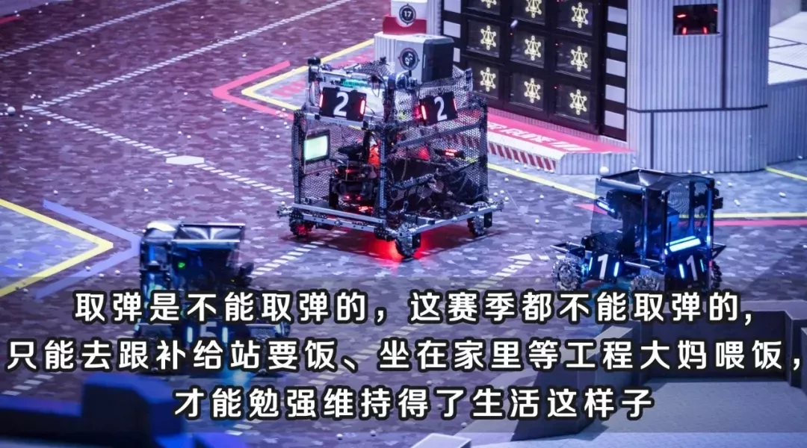
头顶“来打我呀”装甲片也有我的份，还好不是绿色的。毕竟，风水轮流转，今年的主角就留给他们吧。
3
我终于，终于熬出头了！今年我受到了史无前例的重视，主角光环向我拢靠！
依旧是不死之身的我，可以在一段时间内，毫无限制地任意开炮，制霸高空！（去年射频被限制）
步兵、英雄头顶那些很难吊射的装甲片，简直为我而生，闭着眼睛都能打掉血。
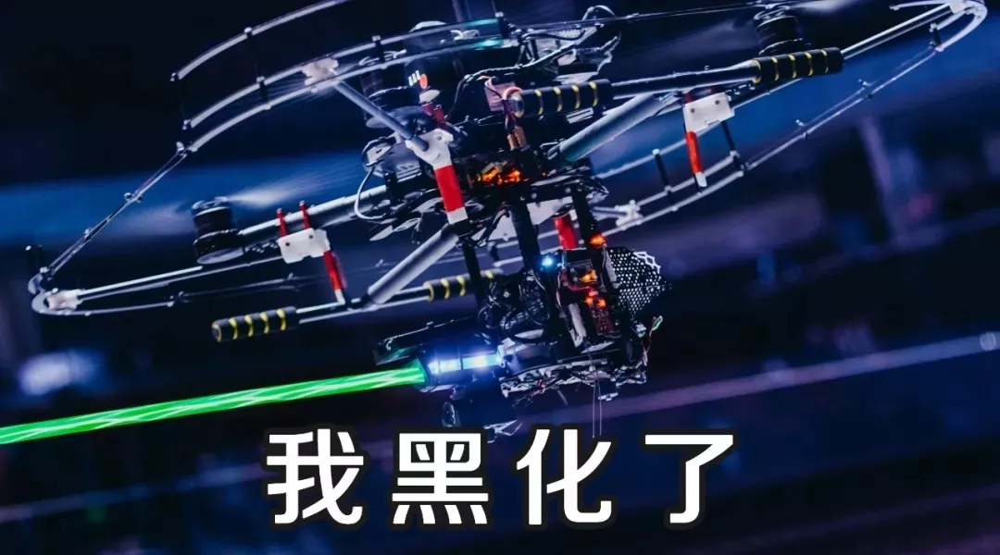
虽然我能力满级，但考虑到，要维系各赛队间的塑料友谊，硬核的我还是少出动为妙。
所以，我得在停机坪蓄满能量才能出发。
怎么蓄能？一是等，按时给能量，二还是等，队友战亡也会给我能量。
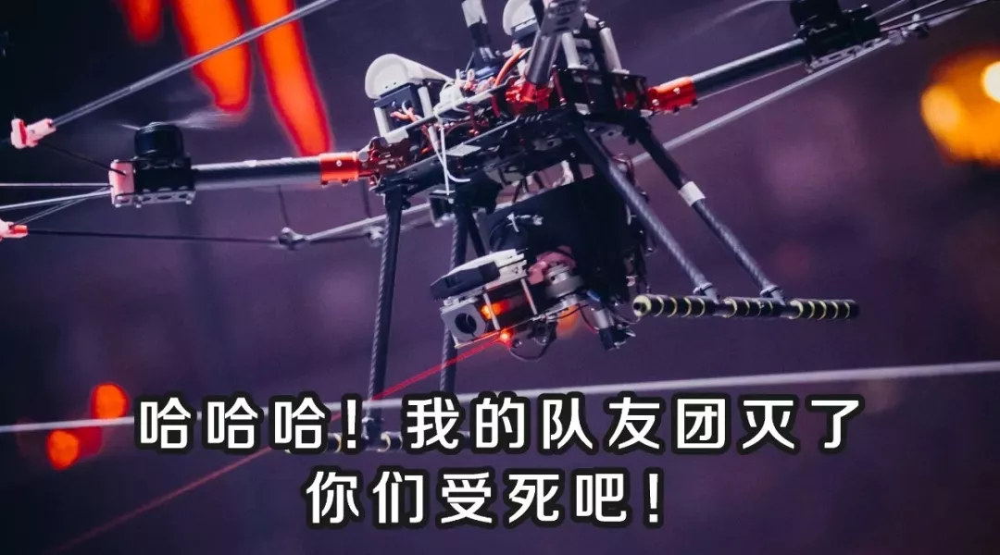
4
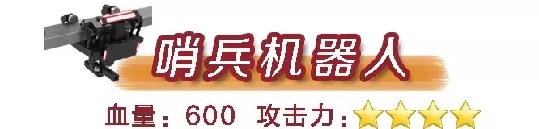
我是一只绿色环保型哨兵，底盘运动功率最多只有20W。（去年无限制）
这是什么概念呢？一个普通吹风机的功率是2000W，相当于100台我！Amazing！！！
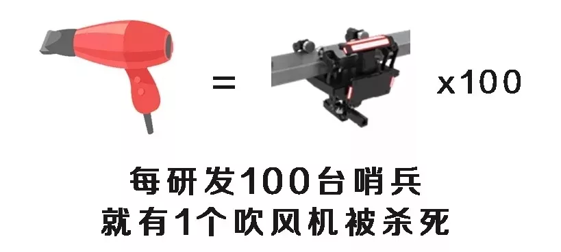
如果跑得太快，能量（功率换算）用光了，我就会静止一会，成为挂在半空中的一只肉鸡。
不过，不要太担心，我的枪口还是能发射啦～只是曾经那个跑得快，把对手逗着玩的我，可能不复存在了。
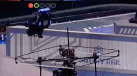
5
我还是原来的配方，原来的味道，但是今年可能要忙坏了。
出门在外，要做肉盾扛住炮火，上岛抢弹丸，救废柴队友回补血区；回到家里，还要哺育巨婴英雄，给他喂弹丸。
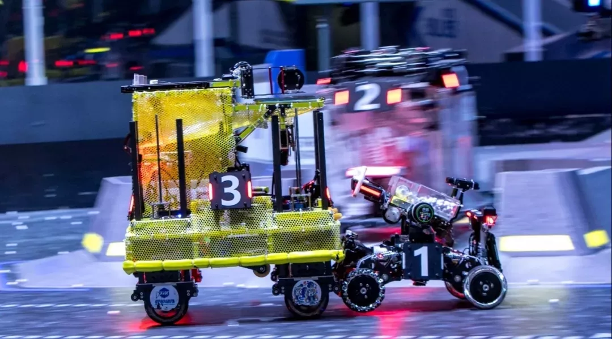
怎么说呢，今年压力很大，希望能跑快点，继续当好我的奶妈吧。
6
全队命根子是我，重点保护对象还是我。把我打死，比赛就结束了。
不过今年，我头顶有4块装甲片，中间那块有点挑食，小弹丸来了一律拒收。
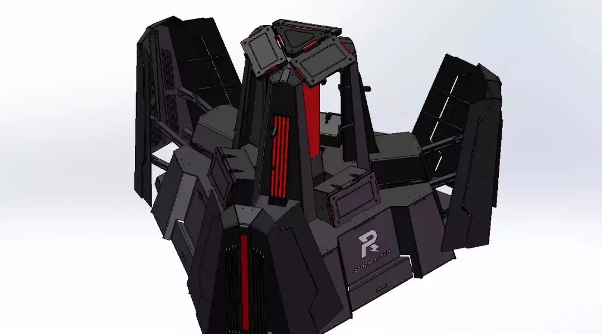
也就是说，只有能发射大弹丸的英雄才能伤害它，而且伤害值猛翻3倍，房价都不敢这么翻！
别看今年“婴雄机器人”这么弱，站在我面前，他依然是个真男人。
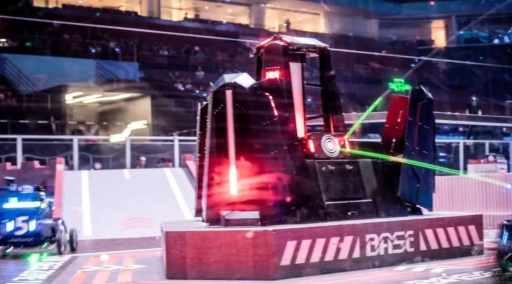
7
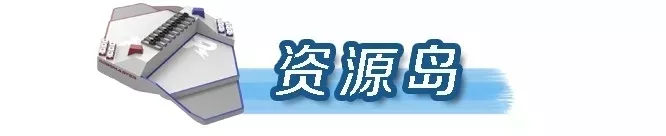
呃……大，大家好，我不是机器人，我只是一个岛。我也说两句吧。
众所周知，资源岛合久必分分久必合，今年我合并了。
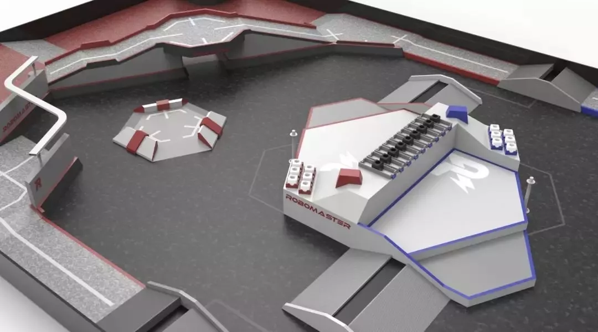
而且，我中间的弹药箱只有一排。它们一开始是藏起来的，到了一定时间才会升起来。
上岛早了，队友在岛下被打，上岛晚了，箱子就被抢空了。
是不是很刺激？这考验的是操作手的踩点技能，谁赴约还没踩点到过呢？
━━━━━
嗯？补给站机器人去哪了？
为了给参赛队减少负担，今年补给站由官方提供！每队一个，参赛就有，良心买卖，童叟无欺。
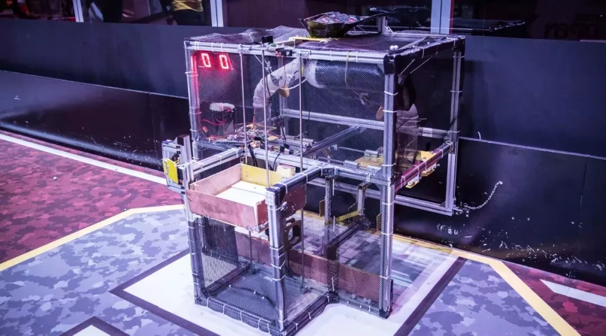
信息量太大，看得一脸懵比？没关系，明年记得来看比赛，现场感受机器人比赛有多帅！
本文转载于RoboMaster官方微信公众号
长按二维码关注